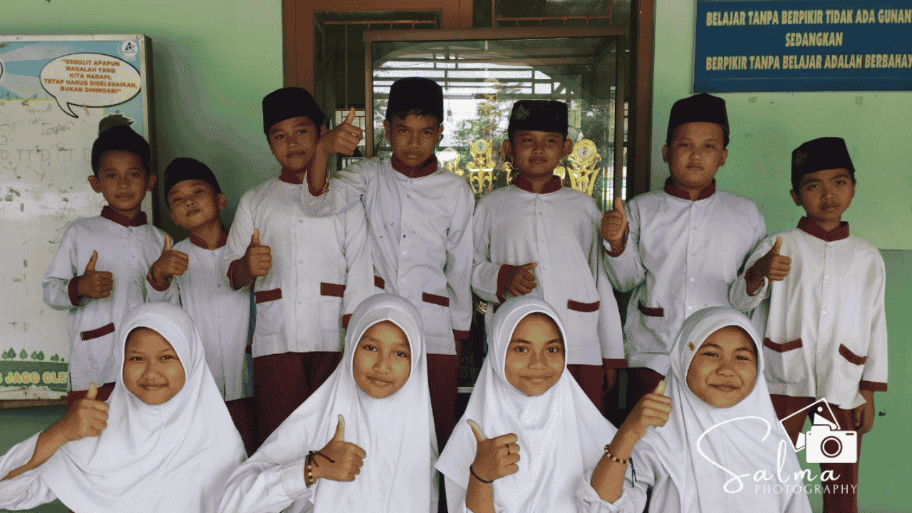

MI Salafiyatul Ma'muroh Paesan telah sukses menyelenggarakan agenda Tes Kemampuan Akademik (TKA) bagi siswa kelas 6. Kegiatan ini merupakan bagian dari rangkaian jadwal nasional yang ditetapkan pemerintah dalam 4 gelombang pelaksanaan. Menindaklanjuti kebijakan tersebut, MI Salafiyatul Ma'muroh secara resmi memilih untuk melaksanakannya pada gelombang ke-2, yang berlangsung selama dua hari pada tanggal 22 dan 23 April 2026.
Demi menjaga efektivitas dan kenyamanan peserta, pihak panitia mengatur jalannya tes ke dalam dua sesi setiap harinya. Pembagian sesi ini dilakukan untuk memastikan setiap siswa mendapatkan pengawasan yang optimal serta fasilitas yang memadai selama mengerjakan soal-soal tes. Seluruh rangkaian kegiatan di dalam ruang kelas dipantau langsung oleh tim pengawas guna menjaga integritas dan kelancaran proses evaluasi akademik tersebut.
Kepala MI Salafiyatul Ma'muroh menyampaikan apresiasi tinggi kepada seluruh pihak yang telah bekerja keras menyukseskan pelaksanaan TKA ini. Beliau menekankan bahwa tes ini merupakan instrumen penting bagi madrasah untuk memahami kebutuhan belajar siswa sebelum lulus, sehingga kurikulum dan metode pengajaran yang diberikan selama ini dapat terukur hasilnya. Semangat sportif dan kejujuran yang ditunjukkan oleh para peserta selama ujian berlangsung menjadi poin utama yang sangat dihargai.
Dengan berakhirnya rangkaian tes ini, madrasah kini tengah memproses hasil evaluasi untuk tahapan selanjutnya. MI Salafiyatul Ma'muroh berkomitmen untuk terus menjaga standar kualitas pendidikan demi mencetak generasi yang cerdas dan berkarakter. Pihak madrasah berharap hasil dari TKA ini dapat memberikan gambaran yang tepat bagi orang tua siswa mengenai capaian akademik buah hati mereka serta langkah apa yang perlu diambil untuk mendukung potensi mereka kedepannya.
← Kembali ke Beranda